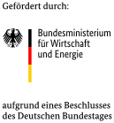
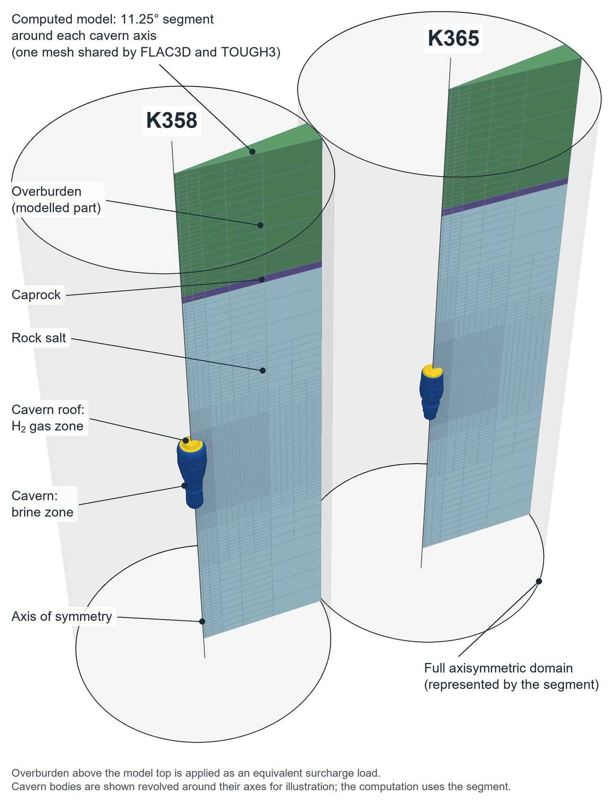
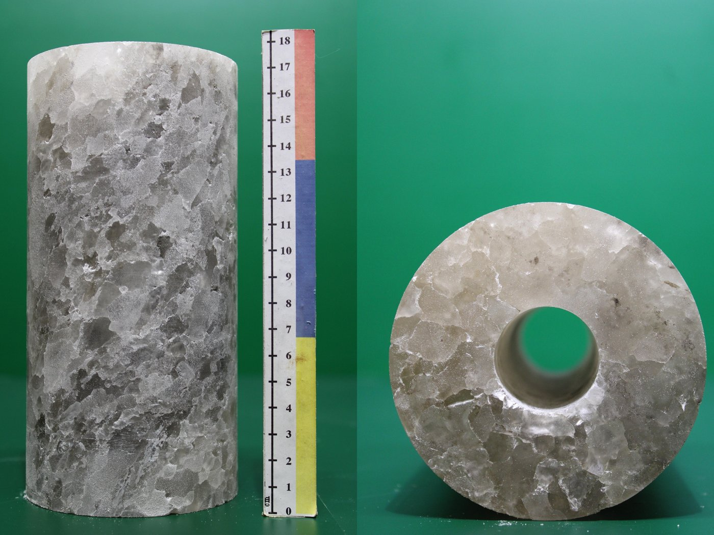
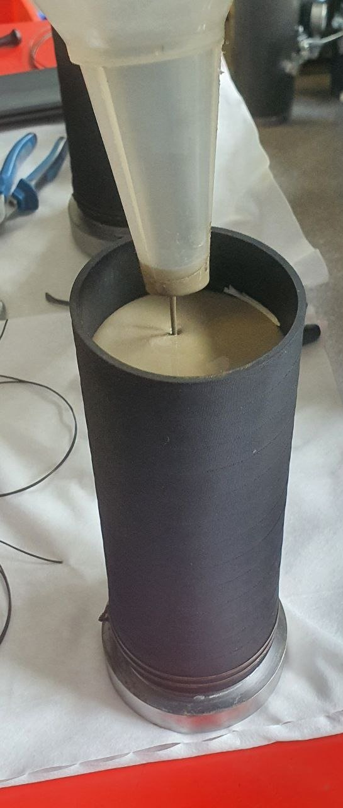
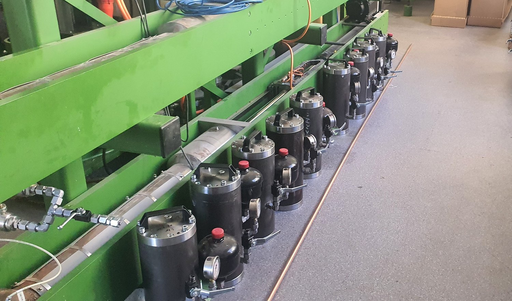
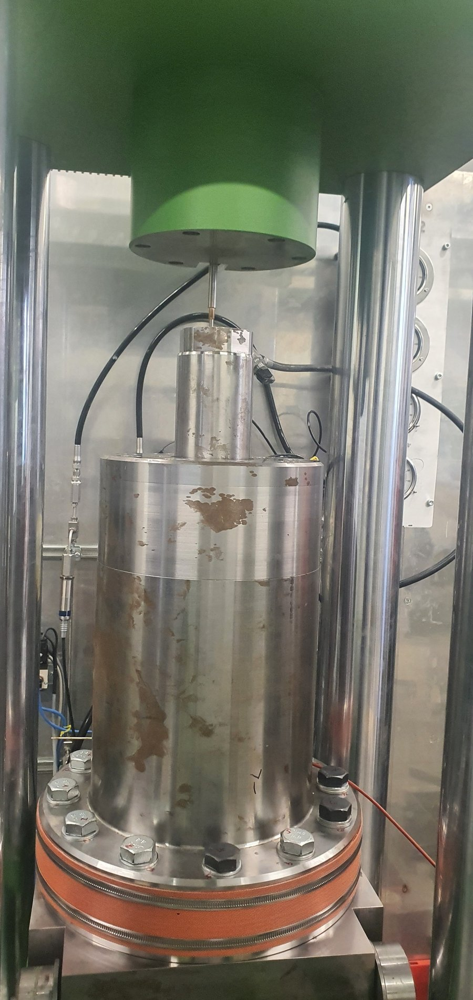
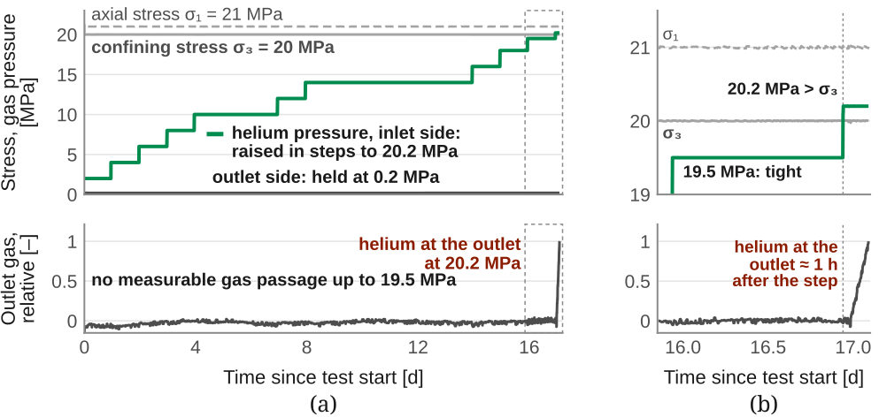
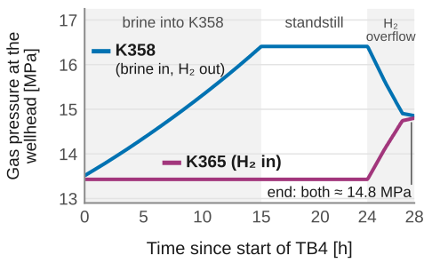
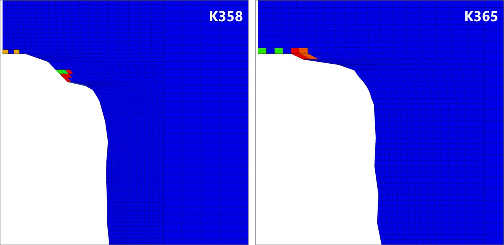
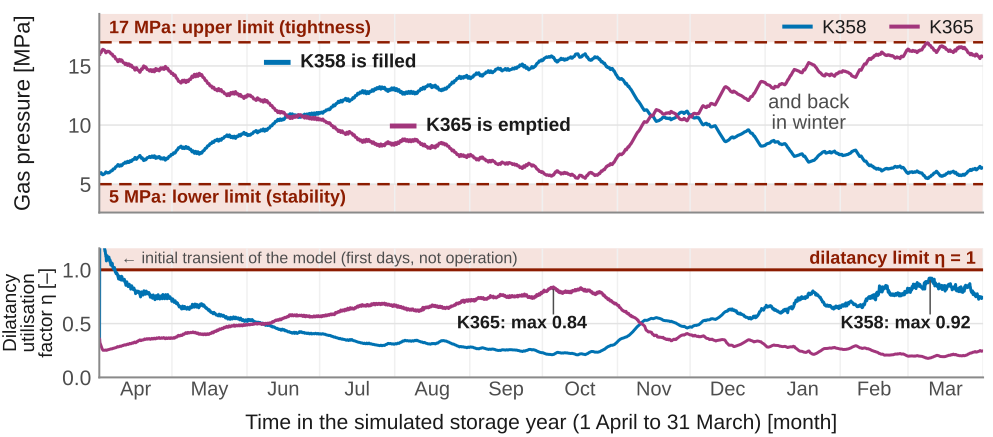

H2CAST-ProveH2CAST Infomarkt · Etzel · 10 November 2026

Live poster
Chair of Geomechanics and Multiphysics Systems
How flexibly can hydrogen salt caverns be cycled?
Ralf Wolters-Zhao, Amir Ehteshami
Motivation
H2CAST-Prove tests highly flexible hydrogen storage in two converted salt caverns at Etzel, K358 and K365.
TU Clausthal predicts with coupled simulations whether the rock salt stays stable and tight, and tests the gas
tightness of rock salt and borehole cement in its own laboratory.
The simulation model
Fig. 1: FTK, TU Clausthal’s coupling of FLAC3D and TOUGH3. In every time interval Δt the boxes run in the
order 1, 2, 3; the quantities sent back act in the next interval, and Δt adapts automatically.
Both caverns are modelled as separate 11.25° segments, built from the 2023 sonar survey,
with the leaching history since 2011.
Criteria: η < 1 (dilatancy limit) and no tension at the wall. H2 enters the
salt only where it dilates (porosity φ and permeability k rise) or where the gas pressure reaches the
minimum principal stress σmin.
Mesh refined towards the cavern wall, where creep and possible damage are evaluated.

Fig. 2: Computed segments of rock salt, caprock and overburden; the overburden above the model top acts as a
surcharge load. Cavern bodies are shown revolved.
Laboratory: is the well barrier tight?

(a)

(b)

(c)

(d)
Fig. 3: Specimens like the last cemented casing shoe – rock salt with a cemented borehole, and full cement.
(a) Rock salt with a 30 mm borehole, (b) casting the cement, (c) curing vessels: 28 days at 20 MPa, (d) triaxial
cell of the helium rig Dü22, designed and built at TU Clausthal.

Fig. 4: Test No. 27, cement specimen (Ø 88 × 180 mm, 30 °C), helium instead of hydrogen for safety.
(a) Full test, (b) last 30 hours. Gas at the outlet: outlet-pump volume, not yet calibrated.
Test No. 27: tight up to 19.5 MPa; gas passed at 20.2 MPa, just above σ3 – consistent
with the infiltration criterion of the model.
Permeability: evaluation in progress (calibration of the gas pumps).
Results: are the planned test scenarios safe?
Predictive FTK simulations of the four planned test runs TB1–TB4 (work package AP 1.4): TB1–TB3 gas-rate driven,
TB4 brine-driven.
Fig. 5: Dilatancy utilisation η in the rock salt around K358 and K365 (half sections; the white notch is
the cavern). (a)–(c) TB1–TB3: K358 at minimum, K365 at maximum pressure; (d) TB4: overflow test.
TB1, TB2 – counter-phase gas cycling: η < 1 everywhere over 10 cycles, no dilatant damage.
TB3 – full pressure range 5–17 MPa: η reaches 1 only locally at the wall of the cavern at minimum
pressure and does not spread over 10 cycles.
TB4 – brine-driven overflow: η ≤ 0.6, no tension; the gas temperature changes by only about 7 K.
Key message: all four test scenarios can be run – TB3 within the 17 MPa limit.

(a)
H2 [kg/m³]
11.60

(b)
Fig. 6: TB4 (FTK). (a) Gas pressures at the wellhead: brine raises the pressure in K358 (15 h); after
a 9 h standstill, H2 flows over to K365 without a compressor (4 h). (b) H2 gas density in the
pores at the end of TB4, enlarged view of the cavern roofs: only a few zones take up hydrogen.
One storage year

Fig. 7: FTK, one storage year without brine movement (variant V1, AP 1.10). Input: DLR hydrogen storage
profile 2045, scaled to the two caverns. The gas pressures use the permitted range of 5–17 MPa; η = highest
utilisation of the observed zones at the cavern wall.
Variant V1: the gas itself is moved between the caverns, without brine. K358 runs between 5.5 and
16.0 MPa, K365 between 5.5 and 16.95 MPa.
In operation η stays below 1, and there is no tension at the cavern wall.
Status and next steps
doneTest scenarios TB1–TB4 (AP 1.4), effect of the cavern conversion (AP 2.1),
Dü22 rig (AP 2.4), salt and cement specimens (AP 2.5).
in progressOne storage year (AP 1.9, 1.10), convergence and surface subsidence
(AP 2.9), helium tightness tests (AP 2.3).
nextMulti-cycle test operation at Etzel, then measured vs. predicted data
(AP 1.6, 1.7); test series at the operating limits (AP 1.8); integrity under multi-cycle operation (AP 2.2) and
long-term loads (AP 2.6); cyclic load tests (AP 2.7).